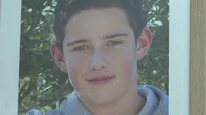
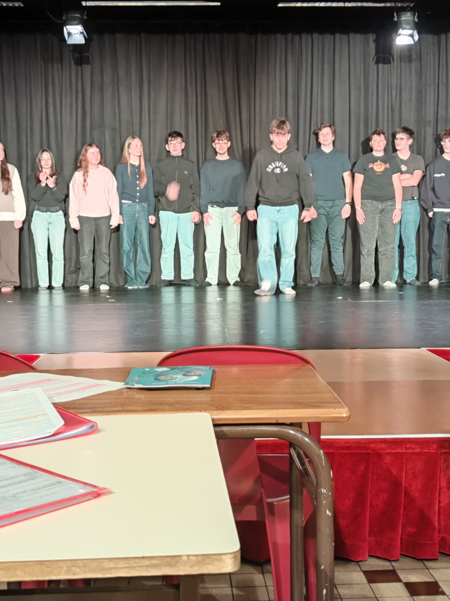

Le Théâtre et moi
Notre Partenaire
Les Spectacles
Nos Représentation
Le Projet en cours
A propos de
Le Théâtre et moi
Notre Partenaire
Les Spectacles
Nos Représentation
Le Projet en cours
A propos de
Notre combat via le spectacle: le harcèlement
En 2017, le jeune garçon Christopher Fallais ses suicider pour cause d'harcèlement répété. Suite à ceux drame, une scène de théatre à été écrite pour sensibilisé contre le harcèlement.

Pour combattre le harcelement, Damien Engloo, Professeur de théâtre au lycée EPID - Vauban, avec ces élèves de seconde jouent une scène de théâtre contre le harcèlement sur différente représentation!
